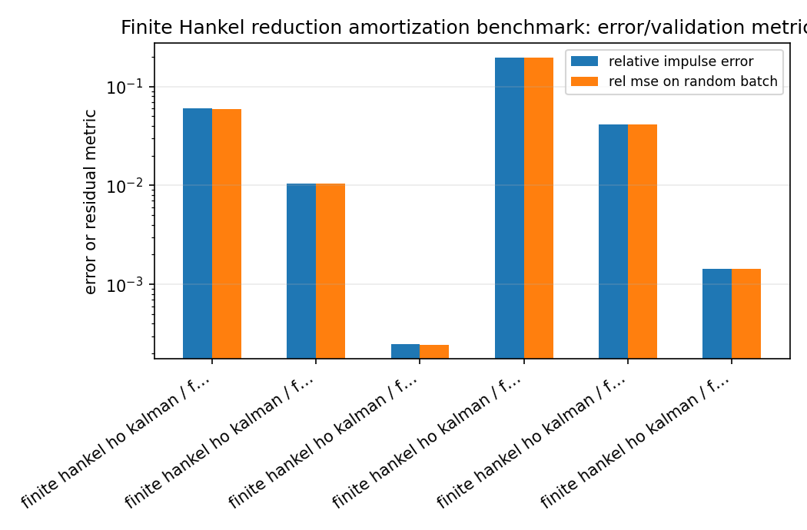
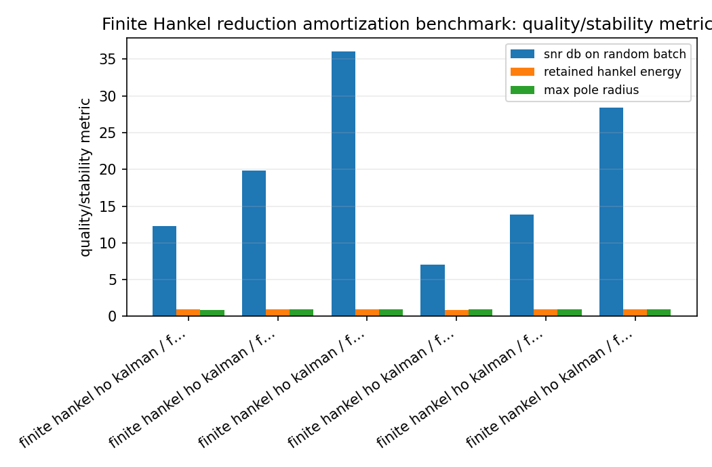
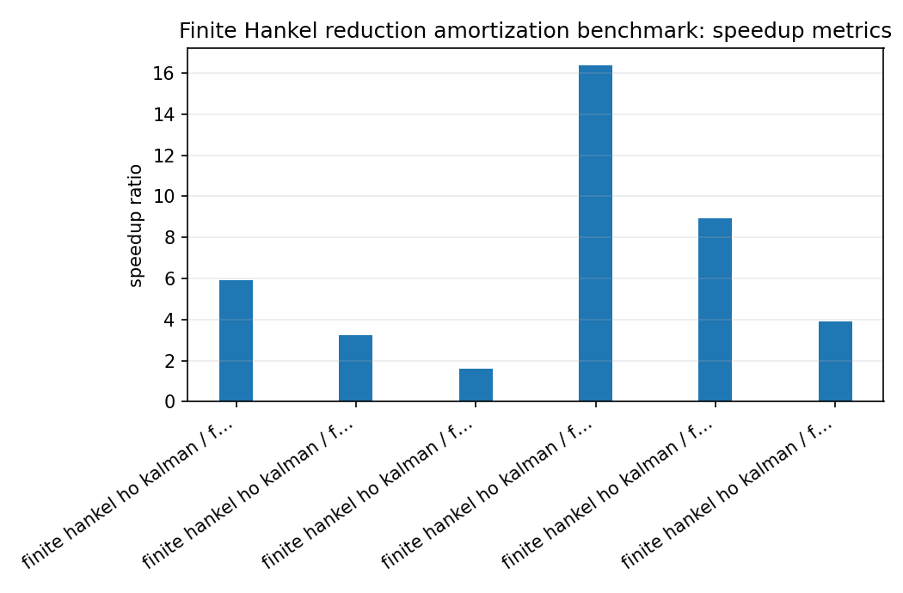
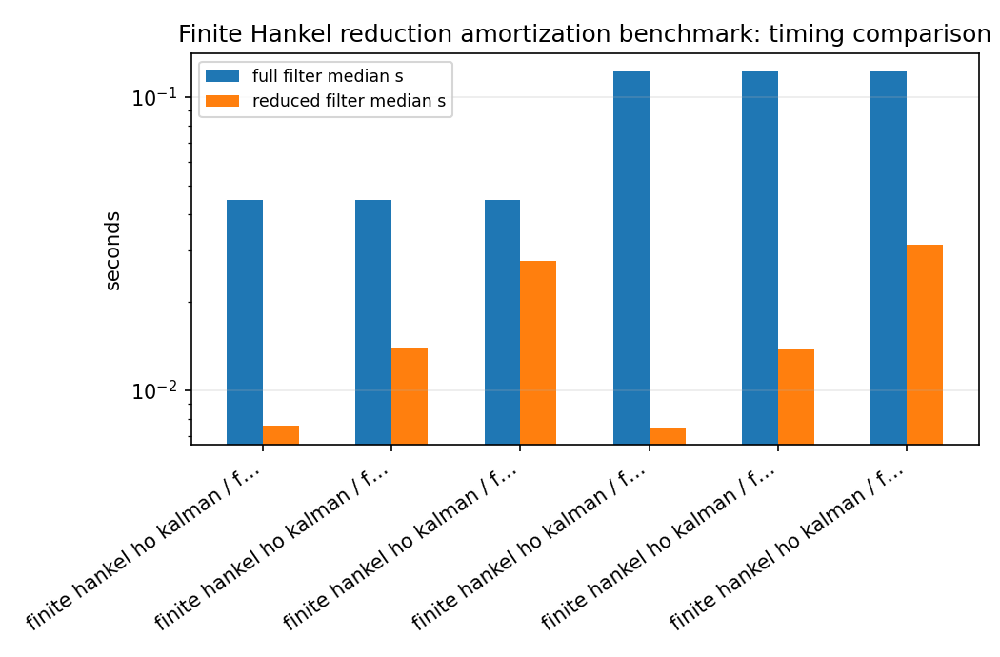

Finite Hankel reduction amortization benchmark¶
Tutorial goal
Measure when a one-time finite-Hankel reduction pays off during repeated high-order IIR filtering.
Note
New to the terminology? See the lattice DSP concept map and the causality/data-use guide for how online, offline, block, and MIMO examples should be read.
Context¶
The finite-Hankel reducer is a preprocessing step. This benchmark makes the speed argument explicit by measuring reduction time, full-order filtering time, reduced-order filtering time, and the break-even number of samples per channel. It separates the method is finite-Hankel/Ho–Kalman reduction, not an exact Nehari/AAK solver.
Key idea and equations¶
The break-even sample count is estimated as
How to read the result¶
Look for high filter speedup, acceptable SNR/error, stable reduced denominators, and a break-even count that is small relative to the intended workload.
Run command¶
python benchmarks/hankel_reduction_speedup.py --full-orders 16 32 --reduced-orders 4 8 12 --channels 32 --samples 20000 --repeats 3 --n-impulse 512 --hankel-rows 64 --hankel-cols 64 --output docs/benchmarks/generated/_artifacts/hankel_reduction_speedup/hankel-reduction-speedup.json
Run status¶
Return code: 0
Visual and data readout¶
When the benchmark gallery is built with results, this page embeds PNG summaries generated from the same JSON/CSV artifacts. The raw data stay available below as downloads so exact numbers remain reproducible without making the public page read like console output.
Figures¶
{kind=link}

hankel_reduction_speedup_error_summary.png¶
{kind=link}

hankel_reduction_speedup_quality_summary.png¶
{kind=link}

hankel_reduction_speedup_speedup_summary.png¶
{kind=link}

hankel_reduction_speedup_timing_comparison.png¶
Generated data files¶
Source code¶
1from __future__ import annotations
2
3import argparse
4import json
5import math
6import platform
7import statistics
8import time
9from pathlib import Path
10
11import numpy as np
12
13import lattice_dsp as ld
14
15
16def median_time(fn, repeats: int):
17 times = []
18 result = None
19 for _ in range(repeats):
20 t0 = time.perf_counter()
21 result = fn()
22 times.append(time.perf_counter() - t0)
23 return statistics.median(times), result
24
25
26def stable_reflection(order: int, rng: np.random.Generator) -> np.ndarray:
27 # Slow decay gives the reducer something nontrivial to compress while staying
28 # comfortably inside the scalar lattice stability region.
29 decay = np.exp(-np.arange(order) / max(8.0, order / 5.0))
30 signs = rng.choice([-1.0, 1.0], size=order)
31 jitter = rng.uniform(0.55, 1.0, size=order)
32 return 0.72 * decay * signs * jitter
33
34
35def numerator_for_order(order: int) -> np.ndarray:
36 n = np.zeros(order + 1, dtype=float)
37 n[0] = 1.0
38 if order >= 2:
39 n[1] = -0.18
40 n[2] = 0.08
41 if order >= 5:
42 n[4] = -0.04
43 return n
44
45
46def snr_db(reference: np.ndarray, estimate: np.ndarray) -> float:
47 err = reference - estimate
48 p_ref = float(np.mean(reference * reference))
49 p_err = float(np.mean(err * err))
50 return 10.0 * math.log10((p_ref + 1e-30) / (p_err + 1e-30))
51
52
53def pole_radius_from_reflection(reflection: list[float]) -> float:
54 if not reflection:
55 return 0.0
56 denominator = np.asarray(ld.reflection_to_denominator(reflection), dtype=float)
57 roots = np.roots(denominator)
58 return float(np.max(np.abs(roots))) if roots.size else 0.0
59
60
61def process(reflection: np.ndarray | list[float], numerator: np.ndarray | list[float], x: np.ndarray):
62 return ld.process_batch(list(map(float, reflection)), list(map(float, numerator)), x)
63
64
65def main() -> None:
66 parser = argparse.ArgumentParser(description="Benchmark finite-Hankel SISO IIR reduction amortization.")
67 parser.add_argument("--full-orders", type=int, nargs="+", default=[16, 32, 64])
68 parser.add_argument("--reduced-orders", type=int, nargs="+", default=[4, 8, 12, 16])
69 parser.add_argument("--channels", type=int, default=64)
70 parser.add_argument("--samples", type=int, default=50000)
71 parser.add_argument("--repeats", type=int, default=3)
72 parser.add_argument("--n-impulse", type=int, default=768)
73 parser.add_argument("--hankel-rows", type=int, default=96)
74 parser.add_argument("--hankel-cols", type=int, default=96)
75 parser.add_argument("--seed", type=int, default=42)
76 parser.add_argument("--output", default="reports/hankel-reduction-speedup.json")
77 args = parser.parse_args()
78
79 rng = np.random.default_rng(args.seed)
80 x = rng.normal(size=(args.channels, args.samples)).astype(np.float64)
81 rows_out: list[dict[str, float | int | bool | str | None]] = []
82
83 for full_order in args.full_orders:
84 reflection = stable_reflection(full_order, rng)
85 numerator = numerator_for_order(full_order)
86
87 full_time, y_full = median_time(
88 lambda reflection=reflection, numerator=numerator: process(reflection, numerator, x),
89 args.repeats,
90 )
91 full_per_sample = full_time / (args.channels * args.samples)
92
93 for reduced_order in args.reduced_orders:
94 if reduced_order >= full_order:
95 continue
96 if reduced_order > min(args.hankel_rows, args.hankel_cols):
97 continue
98
99 reduce_time, reduced = median_time(
100 lambda ro=reduced_order, reflection=reflection, numerator=numerator: ld.finite_hankel_reduce_iir(
101 reflection.tolist(),
102 numerator.tolist(),
103 reduced_order=ro,
104 n_impulse=args.n_impulse,
105 rows=args.hankel_rows,
106 cols=args.hankel_cols,
107 ),
108 1,
109 )
110
111 if not reduced["stable"] or not reduced["reflection"]:
112 rows_out.append(
113 {
114 "full_order": full_order,
115 "reduced_order": reduced_order,
116 "stable": bool(reduced["stable"]),
117 "reduction_time_s": reduce_time,
118 "error": "reduced model was not stable in reflection coordinates",
119 }
120 )
121 continue
122
123 reduced_reflection = list(map(float, reduced["reflection"]))
124 reduced_numerator = list(map(float, reduced["numerator"]))
125 reduced_time, y_reduced = median_time(
126 lambda rr=reduced_reflection, rn=reduced_numerator: process(rr, rn, x),
127 args.repeats,
128 )
129 reduced_per_sample = reduced_time / (args.channels * args.samples)
130 delta = full_per_sample - reduced_per_sample
131 break_even_samples_per_channel = reduce_time / delta / args.channels if delta > 0 else None
132
133 rel_mse = float(np.mean((y_full - y_reduced) ** 2) / (np.mean(y_full ** 2) + 1e-30))
134 rows_out.append(
135 {
136 "full_order": full_order,
137 "reduced_order": reduced_order,
138 "stable": bool(reduced["stable"]),
139 "method": reduced["method"],
140 "retained_hankel_energy": float(reduced["retained_hankel_energy"]),
141 "relative_impulse_error": float(reduced["relative_impulse_error"]),
142 "rel_mse_on_random_batch": rel_mse,
143 "snr_db_on_random_batch": snr_db(y_full, y_reduced),
144 "max_pole_radius": pole_radius_from_reflection(reduced_reflection),
145 "reduction_time_s": reduce_time,
146 "full_filter_median_s": full_time,
147 "reduced_filter_median_s": reduced_time,
148 "filter_speedup": full_time / reduced_time if reduced_time > 0 else None,
149 "full_time_per_sample_s": full_per_sample,
150 "reduced_time_per_sample_s": reduced_per_sample,
151 "break_even_samples_per_channel": break_even_samples_per_channel,
152 }
153 )
154
155 result = {
156 "metadata": {
157 "python": platform.python_version(),
158 "platform": platform.platform(),
159 "has_openmp": bool(ld.HAS_OPENMP),
160 "channels": args.channels,
161 "samples": args.samples,
162 "repeats": args.repeats,
163 "n_impulse": args.n_impulse,
164 "hankel_rows": args.hankel_rows,
165 "hankel_cols": args.hankel_cols,
166 "seed": args.seed,
167 "description": "Finite-Hankel reduction amortization benchmark. Reduction is a preprocessing cost; speedup applies when the reduced model is reused.",
168 },
169 "rows": rows_out,
170 }
171
172 output = Path(args.output)
173 output.parent.mkdir(parents=True, exist_ok=True)
174 output.write_text(json.dumps(result, indent=2), encoding="utf-8")
175
176 print(json.dumps(result["metadata"], indent=2))
177 print()
178 print(
179 f"{'full':>5s} {'red':>5s} {'stable':>7s} {'reduce_s':>10s} "
180 f"{'full_s':>10s} {'red_s':>10s} {'speedup':>8s} {'SNR':>8s} {'break_even/ch':>15s}"
181 )
182 print("-" * 95)
183 for row in rows_out:
184 if "error" in row:
185 print(f"{row['full_order']:5d} {row['reduced_order']:5d} {str(row['stable']):>7s} {row['reduction_time_s']:10.4f} ERROR: {row['error']}")
186 continue
187 be = row["break_even_samples_per_channel"]
188 be_text = "n/a" if be is None else f"{be:.0f}"
189 print(
190 f"{row['full_order']:5d} {row['reduced_order']:5d} {str(row['stable']):>7s} "
191 f"{row['reduction_time_s']:10.4f} {row['full_filter_median_s']:10.4f} "
192 f"{row['reduced_filter_median_s']:10.4f} {row['filter_speedup']:8.2f} "
193 f"{row['snr_db_on_random_batch']:8.2f} {be_text:>15s}"
194 )
195
196 print()
197 print(f"Wrote {output}")
198
199
200if __name__ == "__main__":
201 main()